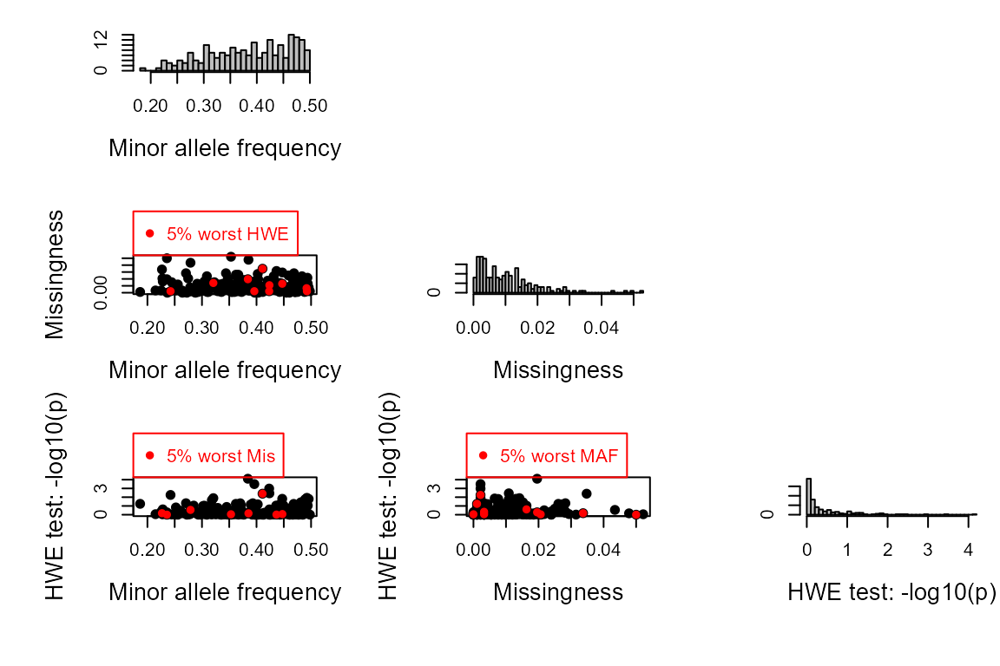

Quick start example 1: Simulated data
quick_start_example1.RmdGet started
For a succinct version of this example where you can copy/paste all code in one go, see the main vignette
In this example genotypes are simulated from a fictional pedigree, which together with the associated life history data is provided with the package. This pedigree consists of 5 discrete generations with interconnected half-sib clusters (Pedigree II in the paper1).
# Install the package. This is only the required the first time, or if you wish to update
install.packages("sequoia")
# Load the package. This is required at the start of every new R session.
library(sequoia)
# Load the example pedigree and life history data
data(Ped_HSg5, LH_HSg5)
# Take a look at the data structure
tail(Ped_HSg5)
head(LH_HSg5)
# or, in Rstudio, view the full dataframe:
View(Ped_HSg5)Simulate genotypes
Simulate some genotype data to use for this try-out.
Geno <- SimGeno(Ped = Ped_HSg5, nSnp = 200)Function SimGeno() can simulate data with a specific
genotyping error rate, call rate and proportion of non-genotyped
parents, see its helpfile (?SimGeno) for details. Here we
use the defaults; 40% of parents are presumed non-genotyped (their
genotypes are removed from the dataset before SimGeno()
returns its result).
Parentage assignment
Run sequoia with the genotype data, lifehistory data, and otherwise default values. It is often advisable to first only run parentage assignment, and check if the results are sensible and/or if any parameters need adjusting. Full pedigree reconstruction, including sibship clustering etc., is much more time consuming.
To only run a data check, duplicate check (always performed first)
and parentage assignment, specify Module = 'par' (in older
versions: MaxSibIter=0):
ParOUT <- sequoia(GenoM = Geno,
LifeHistData = LH_HSg5,
Module = 'par')## Genotype matrix looks OK! There are 920 individuals and 200 SNPs.## Ageprior: Flat 0/1, overlapping generations, MaxAgeParent = 6,6##
## ~~~ Duplicate check ~~~##
## ~~~ Parentage assignment ~~~## Parentage ...
## Initial total LL :
## [1] -77993.08
## Post-parentage total LL :
## [1] -60786.8
## Estimating birth years ...
## Calculating parental LLR ...## assigned 544 dams and 542 sires to 920 individuals## Possibly not all parents were assigned, consider running GetMaybeRel() to checkYou will see several plots appearing:
- Histograms of the minor allele frequency and missingness, produced
by
SnpStats(), which is called byCheckGeno()to make sure there are no monomorphic SNPs or SNPs with extremely high missingness in the dataset
- Heatmap of the ageprior before parentage assignment, showing that an
age difference of 0 years is disallowed (\(0\), black) for mothers (M) and
fathers (P), but all other age differences are allowed (\(1\), pale green) for all relationships. The
initial maximum age of parents is set to the maximum age difference
found in the lifehistory data.
- Barplots of assignment rate (produced by
SummarySeq()): nearly 60% of individuals have a genotyped parent assigned, in line with the 40% non-genotyped parents we simulated.
In addition, you will see several messages, including about the initial and post-parentage total LL (log10-likelihood). This is the probability of observing the genotype data, given the (current) pedigree; initially it is assumed that all individuals are unrelated. This number is negative, and gets closer to zero when the pedigree explains the data better.
The result is a list, with the following elements:
names(ParOUT)## [1] "Specs" "ErrM" "args.AP" "AgePriors"
## [5] "LifeHist" "DupLifeHistID" "NoLH" "PedigreePar"
## [9] "TotLikPar" "AgePriorExtra" "LifeHistPar"which are explained in detail in the helpfile (?sequoia)
and the main vignette.
you find the assigned parents in list element
PedigreePar:
tail(ParOUT$PedigreePar)## id dam sire LLRdam LLRsire LLRpair OHdam OHsire MEpair
## 915 b05187 <NA> b04098 NA 3.15 NA NA 0 NA
## 916 a05188 <NA> b04098 NA 3.40 NA NA 0 NA
## 917 a05189 <NA> b04177 NA 6.25 NA NA 0 NA
## 918 b05190 <NA> b04177 NA 6.00 NA NA 0 NA
## 919 b05191 <NA> b04177 NA 7.95 NA NA 0 NA
## 920 b05192 <NA> b04177 NA 6.68 NA NA 0 NAwe can compare these to the true parents, in the original pedigree from which we simulated the genotype data:
chk_par <- PedCompare(Ped1 = Ped_HSg5, Ped2 = ParOUT$PedigreePar)
chk_par$Counts["GG",,] ## parent
## class dam sire
## Total 547 544
## Match 544 542
## Mismatch 0 0
## P1only 3 2
## P2only 0 0Here ‘GG’ stands for Genotyped offspring, Genotyped parent.
Pedigree reconstruction
Then, we can run full pedigree reconstruction. By default, this re-runs the parentage assignment.
SeqOUT <- sequoia(GenoM = Geno, LifeHistData = LH_HSg5, Module = "ped")If you don’t want to re-run parentage assignment (e.g. because it took quite a bit of time), or if you have specified several non-default parameter values you want to use again, , you can provide the old output as input.
Re-used will be:
- parameter settings (
$Specs) - genotyping error structure (
$ErrM) - Lifehistory data (
$LifeHist) - Age prior, based on the age distribution of assigned parents
(
$AgePriors)
The last is generated by MakeAgePrior(), which has
detected that all parent-offspring pairs have an age difference of \(1\), and all siblings an age difference of
\(0\), i.e. that generations do not
overlap. This information will be used during the full pedigree
reconstruction.
ParOUT$AgePriors## M P FS MS PS
## 0 0 0 1 1 1
## 1 1 1 0 0 0
## 2 0 0 0 0 0So run sequoia() with the old output as input,
SeqOUT <- sequoia(GenoM = Geno,
SeqList = ParOUT,
Module = "ped")## Genotype matrix looks OK! There are 920 individuals and 200 SNPs.## using LifeHistData in SeqList## using AgePriors in SeqList## using PedigreePar in SeqList##
## ~~~ Duplicate check ~~~##
## ~~~ Full pedigree reconstruction ~~~## Sibships - Initial Total LL :
## [1] -60786.8
## Round 01 end, Total LogLik; time (sec):
## [1] -48324.8908 42.3125
## No. dams, sires for real indiv.:
## [1] 897 902
## Round 02 end, Total LogLik; time (sec):
## [1] -47677.03335 18.95312
## No. dams, sires for real indiv.:
## [1] 902 902
## Round 03 end, Total LogLik; time (sec):
## [1] -47676.53 2.00
## No. dams, sires for real indiv.:
## [1] 902 902
## Estimating birth years ...
## Calculating parental LLR ...## assigned 960 dams and 960 sires to 920 + 80 individuals (real + dummy)
## Possibly not all relatives were assigned, consider running GetMaybeRel() to check
Full pedigree reconstruction will take at least a few minutes to run on this fairly simple dataset with one thousand individuals. It may take a few hours on larger or more complex datasets, and/or if there is much ambiguity about relationships due to a low number of SNPs, genotyping errors, and missing data.
You will get several messages:
- From
CheckGeno()to inform you that the genotype data is OK
- To inform you which parts of
SeqList(the output from the oldsequoia()run) are being re-used
- At the end of each iteration, to update you on the total log10-likelihood (LL), the time it took for that iteration, and the number of dams & sires assigned to real, genotyped (non-dummy) individuals. The total LL and number of assigned parents should plateau (but may ‘wobble’ a bit), and then the algorithm will finish.
Again you will see some plots:
- Histograms of the minor allele frequency and missingness
- Heatmap of an extended version of the ageprior, including all
grandparents and avuncular (aunt/uncle) relationships
(
$AgePriorExtra). These are derived from the ageprior for parents and siblings, which hasn’t changed since just after parentage assignment
- an update of the assignment rates plot, now including dummy parents.
For additional plots and a few tables to inspect the pedigree, you
can use SummarySeq():
summary_seq1 <- SummarySeq(SeqOUT, Panels=c("sibships", "D.parents", "LLR"))

names(summary_seq1)## [1] "PedSummary" "ParentCount" "GPCount" "SibSize"And again we can also compare the results to the true parents:
chk <- PedCompare(Ped1 = Ped_HSg5, Ped2 = SeqOUT$Pedigree)
chk$Counts## , , parent = dam
##
## class
## cat Total Match Mismatch P1only P2only
## GG 547 547 0 0 0
## GD 355 355 0 0 0
## GT 902 902 0 0 0
## DG 29 29 0 0 0
## DD 29 29 0 0 0
## DT 58 58 0 0 0
## TT 960 960 0 0 0
##
## , , parent = sire
##
## class
## cat Total Match Mismatch P1only P2only
## GG 544 544 0 0 0
## GD 358 358 0 0 0
## GT 902 902 0 0 0
## DG 32 32 0 0 0
## DD 26 26 0 0 0
## DT 58 58 0 0 0
## TT 960 960 0 0 0See ?PedCompare for a more interesting example with some
mismatches.
If you wish to count e.g. the number of full sibling pairs that are
assigned as full siblings, paternal half siblings, maternal
halfsiblings, or unrelated, or similar comparisons, use
ComparePairs().
Save results
Lastly, you often wish to save the results to file. You can do this
as an Rdata file, which can contain any number of R
objects. You can later retrieve these in R using load, so
that you can later resume where you left of. The disadvantage is that
you cannot open the Rdata files outside of R (as far as I
am aware). Therefore, sequoia also includes a function to
write all output to a set of plain text files in a specified folder.
save(SeqOUT, Geno, file="Sequoia_output_date.RData")
writeSeq(SeqList = SeqOUT, GenoM = Geno, folder = "Sequoia-OUT")